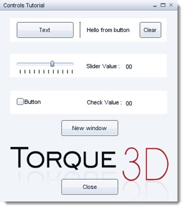
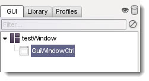
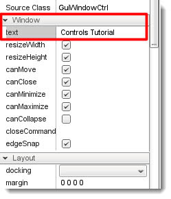
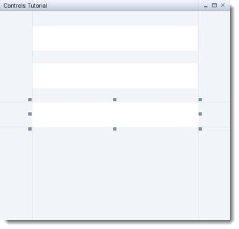
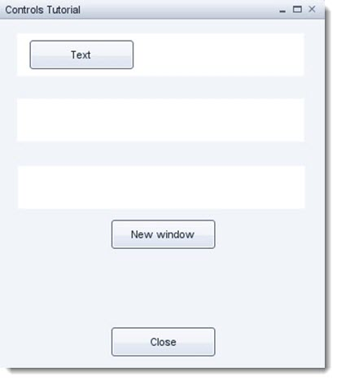
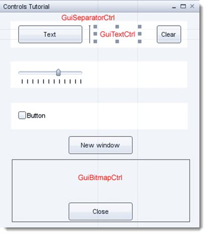
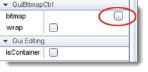
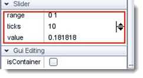

Introduction

By working your way through this project you will learn how to, with
out editing any script, call a GUI dialog to the screen. We will
introduce some new controls and learn how to make them talk to each
other. Every good window has a close button, in this tutorial you will
give your window a close command and also bind this window to a key so
that we can call it from
with in the game.
Suggested Reading:
Covered in this tutorial:
- Add a graphic to your window
- Use the slider control to return a value to a label
- How to set up a GUI
- Call another gui window from a button
- How to use the window min, max and close buttons
- Use a key to bring your GUI to the screen
Setting Up
Open your tutorial project which we made in the first tutorial and press F10 to open the GUI Editor. Click
File->New Gui and enter testWindow for you new GUI and leave the GUI Class as GuiControl.
Alternatively if you have started with the Torque toolbox,
press the GUI Editor button, then select new GUI and as above name your
new GUI testWindow. leave the GUI Class as GuiControl.
Next, select Library and then select the Containers category. Then select GuiWindowCtrl.
If you can not see this control use the scroll bar to move
down the list. Move the new window control to the center of your editor
work area and resize it so that it can take a few controls.
Set the window text to Controls Tutorial. Do this by selecting the window control in the GUI hierarchical tree.

Look in the properties pane for the General section and change the property value for text to the new title:

HINT: You can resize these property panes by hovering your
mouse over the divider bar in the center. Your pointer will then change
to a left/right arrow, when it does you will be able to click and
resize the pane.
Adding Controls
STEP 1: Making sure you have the GuiWindow control selected in the controls list as we want to add our new controls to this GuiWindow.
Again, select the Library tab and Head over to the controls library and select the categorized tab then from the list
also select Containers then choose the GuiPanel control.

With this new control still selected look in the properties for the GuiControl section then change the profile entry to GuiFrameSetProfile.
This will change our GuiPanel to a white background. We will look at profiles and how to make our own in a later tutorial.

Resize this panel control and duplicate by Ctrl+C (Cmd+C on Mac) followed by Ctrl+V (Cmd+V on Mac) then move the copy further down the window, repeat once
more so you have 3 panel controls. You should now have something
looking like this:

Make a save, File->Save To File point your browser to game/art/gui and give the file the name of testWindow.gui.
NOTE: Remember to save frequently.
STEP 2: Now we shall add some buttons from the control library. Ensure the GuiWindowCtrl is selected and from the GUI Tree
add GuiButtonControl. Resize the width of the button slightly, then copy / paste two more buttons, move them to a position like in the image below.

Change the text property from the GuiButtonBaseCtrl for each of the buttons to:
button 1 control text field: Text
button 2 control text field: New Window
button 3 control text field: Close
STEP 3: We shall now add the remaining controls as we did for the button:
- GuiSliderCtrl
- GuiCheckBoxCtrl
- GuiSeparatorCtrl
- GuiTextCtrl
- GuiBitmapCtrl (you will need to look in the 'All' Tab of the library)
- GuiButtonCtrl (set this controls property text to "Clear" also resize it to half its width.
See image below for layout:

Now is a good time to save.
STEP 4: Select, copy and paste the GuiTextCtrl and place next to the slider repeat again and place next to the check box. Set the GuiTextCtrl properties as follows:
text control 1 text property: Hello from button
text control 1 name property: lbltextHello
text control 2 text property: Slider Value: <blank>
text control 3 text property: Check Value: <blank>
You may find that not all the text is showing correctly, in
this case grab the right hand resizing handle, and move right a little
to expand the control. We need two more text controls to display our
values so once again select, copy and paste one of the GuiTextCtrl.
Place one next to the slider text and the other next to the check text.
Set their properties as follows:
text control 4 text property: 00
text control 4 name property: lblSliderValue
text control 5 text property: 00
text control 4 name property: lblCheckValue
STEP 5: Set the slider control property:
slider control name property: sld1
Next, select the GuiBitmapCtrl and in its
properties Bitmap section you will notice the bitmap parameter.
To the right of this section there is a little box, click on this to
open the bitmap browser.

Select a bitmap or copy this one to your game/art/gui folder and select from there:
(drag this image to your game/art/gui folder or Right Click->Save Image As...)
You should have something that looks similar to this:
Now is a good time to save.
Bring the GUI to Life
Now that we have added all of our GUI controls, we need to make it
all work. We shall start with the "hello" text, this and the "Clear"
button will be initially hidden from view. When the button is pressed
the text and button will be displayed again. The small button will be
set to hide the text and itself when pressed.
Each control has GuiControl.setValue( value ) and value = GuiControl.getValue() for setting and receiving its content, be it a value for a slider or
text for a text control etc. We will use these methods to make our GUI
interactive.
First we will hide the text and button:
button "Clear" property name: btnClear
button "Clear" property visible: unchecked (the button should now be hidden)
Text "Hello" property visible: unchecked (the text should now be hidden)
This next line adds a small script to the button, so when pressed changes the visibility of the controls.
NOTE: Remember to press enter after changing a properties parameter.
button "Text"property Command: btnClear.visible = true; lbltextHello.visible = true;
button "Clear" property Command: btnClear.visible = false; lbltextHello.visible = false;
Save and Press F10 to try out the GUI.
Next, we will work on the slider. Select the slider control
and set its property so that when we move the slider the text will
display its value.
slider control property command: lblSliderValue.setValue(sld1.getValue());
You can change the sliders range min / max values and the
way the ticks graphic is displayed by using its Slider property. The
range shows 0 1 this is the min and max value for the control separated
by a space.

We will look at the check box and make it display its current state in the text control next to it.
check box control property name: chk1
check box control property command: lblCheckValue.setValue(chk1.getValue());
Save and Press F10 to try out the GUI.
HINT: You could also call a function from the control property command, this we will look at in a later tutorial.
A New Window
When we press the "New Window" button we want to call another window to our screen, for this we will use the command:
Canvas.pushDialog( dialogName ) to open a GUI
Canvas.popDialog( dialogName ) to close a GUI
Select the "New Window" button and set its properties:
button "New Window" property command: Canvas.pushDialog(newWindow);
We are going to need this new window to call. Save this GUI, then go to File->New Gui and make a new GUI named newWindow of a GuiControl class. Add to this a GuiWindowCtrl and in this new window also add a GuiTextCtrl.
Set the following properties:
GuiTextCtrl Control property text: Hello
GuiTextCtrl Control property profile: GuiBigTextProfile
GuiWindowCtrl control property text: My Window
If you look at the GuiWindowCtrl property General section
you can see check boxes that allow the window to maximize, minimize,
resizeWidth, resizeHeight. For this exercise we can leave these set to
default. What we do want to do is enable the window to be able to close
from the close icon which is top right of all our windows.
GuiWindowCtrl control property canClose: checked
This next line is not to be confused with the normal control
command but is a special command that is called when the user clicks
the close icon. GuiWindowCtrl control property
GuiWindowCtrl control property closeCommand: Canvas.popDialog(newWindow);
Save your new window as newWindow.gui to art/gui folder. If you preview
your GUI you can close it by clicking on the close icon. Although you
will have to re-open it from the file menu afterward. Close T3D down
and load up your favorite script editor. Open scripts/client/init.cs and add the following lines after // load up the shell GUIs:
exec("art/gui/newWindow.gui");
exec("art/gui/testWindow.gui");
This will tell the engine that we will need these guis at some point,
and when we call for them, the engine will know where to look. Open up
our testWindow.gui from the file menu. Press F10 and try out the new window button. All
being well, you will see the new window pop up on your screen.
Load GUI From Key Press
This is all ok if we are just testing a GUI, but if we need to use
it in our project we generally need to call it from a key press. This
is done with a little bit of scripting, we are going to use the
following command:
bind(Device, Action, command); |